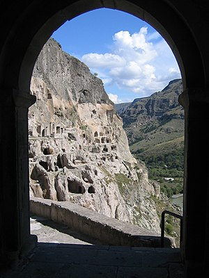
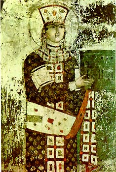
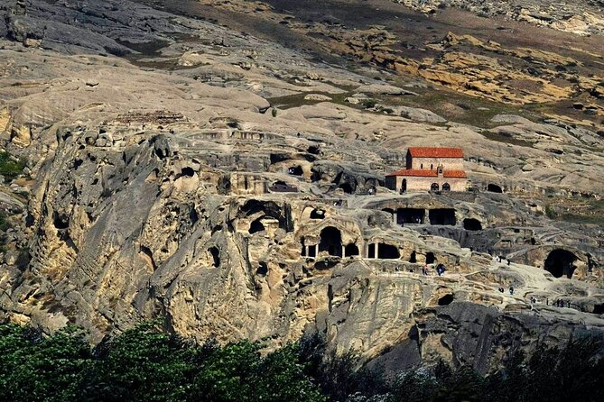

get to know georgia
არძია — კლდეში ნაკვეთი სამონასტრო ანსამბლი, XII-XIII საუკუნეების ქართული მხატვრული კულტურის ძეგლი. მდებარეობს ისტორიულ ჯავახეთში, ასპინძის მუნიციპალიტეტში (ასპინძინდან 30 კმ). მდ. მტკვრის მარცხენა ნაპირზე. ზღვის დონიდან 1300 მეტრზე. ოროგრაფიული სქემის მიხედვით ვარძია მდებარეობს ერუშეთის ქედის აღმოსავლეთის განტოტების ბოლოს. ვარძიის უკიდურესი ზედა გამოქვაბული ზღვის დონიდან 1462 მ-ზე ძევს.

სამონასტრო კომპლექსი ძირითადად 1156-1203 წლებში იქმნებოდა. დასახლება 1185 წლის 15 აგვისტოს თამარის მეფობის ხანაში (1184-1213) აკურთხეს. სამეფო მონასტერი დიდ როლს თამაშობდა ქვეყნის პოლიტიკურ და კულტურულ ცხოვრებაში. ერთხანს ვარძიაში მოღვაწეობდა იოანე შავთელი, რომელმაც იქ შექმნა "გალობანი ვარძიისა ღვთისმშობლისანი". ვარძიის წიგნთსაცავიდან შემორჩენილია ვარძიის ოთხთავის დასურათებული ხელნაწერი (XII ს.). ვარძიის მონასტრის წინამძღვრის სახელი ტრადიციულად საწოლის მწიგნობარი იყო, იგი ეკლესია-მონასტრების საქმიანობას ხელმძღვანელობდა და ქვეყნის პოლიტიკურ ცხოვრებაში თვალსაჩინო როლს ასრულებდა.
მონღოლთა ბატონობის ხანაში (XIII საუკუნის II ნახევარი) ვარძიელი ბერ-მონაზვნები აქტიურად იბრძოდნენ სარწმუნოებისა და ეროვნული კულტურის გადასარჩენად. 1551 წელს მონასტერი სპარსთა ჯარმა დაარბია და დაანგრია. ვარძიის ცნობილი ღვთისმშობლის ხატი, ოქროსა და ფოლადის კარები და კულტურის სხვა მრავალი განძი მტერმა გაიტაცა. 1578 წელს, როდესაც ეს მხარე ოსმალეთმა დაიპყრო, მონასტერი საბოლოოდ გაუკაცრიელდა. რუსეთ-ოსმალეთის ომის (1828-1829) შემდეგ ვარძია კვლავ საქართველოს შემადგენლობაშია.
საქართველოში საბჭოთა ხელისუფლების დამყარების შემდეგ დაიწყო ამ სამონასტრო კომპლექსის მეცნიერული შესწავლა. 1938 წელს იგი მუზეუმ-ნაკრძალად გამოცხადდა. 1970-1971 წლებში ვარძიაში ჩატარდა არქეოლოგიური გათხრები, მიკვლეულ იქნა 3 კულტურის ფენა: ადრინდელი შუა საუკუნეებისა, XII საუკუნისა და XIII-XIV საუკუნეები. აღმოჩნდა მოჭიქული კერამიკის მრავალფეროვანი ნიმუშები, ქაშანურის ფრაგმენტები, ლითონის სადნობი, სხვადასხვა საყოფაცხოვრებო ნივთი და იარაღი.
ვარძია “... საკვირველებას წარმოადგენს. მიუვალობით ის ალექსანდრეს კედელს და ხეიბერის კოშკს ედრება…”-ასე წერდა ვარძიის შესახებ სპარსეთის სეფევიდების დინასტიის მემატიანე, XVI საუკუნის ისტორიკოსი ჰასან ბეგ რუმლუ თავისი ნაწარმოების "ახსან-ათ-თავარიხის” (“უმშვენიერესი ისტორიათაგანი”) ფურცლებზე. დადგენილია, რომ ხეობა მტკვრის ორივე მხარეს მჭიდროდ იყო დასახლებული უკვე ენეოლითის ხანაში, არქეოლოგიური სამუშაოების დროს ტერასებზე და ბორცვებზე მიკვლეულია პირველყოფილი თემური საზოგადოების ენეოლით – ბრინჯაოს და გვიან – ბრინჯაოს ეპოქათა ძეგლები, მათ შორის ყორღანული სამარხები. ამ ტიპის ძეგლების შესწავლამ გამოავლინა თრიალეთის კულტურის გავრცელების არეები. “ქართლის ცხოვრებაში” პირდაპირი ცნობებია, რომ მონასტრის შენება მეფე გიორგი III დროს დაწყებულა და შემდგომ თამარის მეფობის დროს დასრულდა.
თამარ მეფის დროინდელი მემატიანე ვრცლად და მხატვრულად მოგვითხრობს ვარძიის დაარსებას. ამ უდიდესი სამეფო მონასტრის შექმნას უკავშირებს იგი თამარ მეფის მოღვაწეობის დახასიათებას საეკლესიო-სამონასტრო მშენებლობის დარგში – ქვეყნის შიგნით და მის ფარგლებს გარეთ. ადგილის შერჩევა განპირობებული იყო კლდის საუკეთესო სამშენებლო თვისებებით, ხელსაყრელი ადგილმდებარეობით, საყოფაცხოვრებო, სამხედრო თვალსაზრისით და, აგრეთვე, აქ სასმელი წყლის არსებობით.
2006 წლის 7 ნოემბერს, საქართველოს პრეზიდენტის ბრძანებულების თანახმად მიენიჭა ეროვნული მნიშვნელობის კულტურის უძრავი ძეგლის კატეგორია[1]. 2007 წლის 24 ოქტომბრიდან ვარძიის მონასტერი ხერთვისის ციხესთან ერთად შეტანილია იუნესკოს მსოფლიო მემკვიდრეობის საცდელ სიაში.[2]
